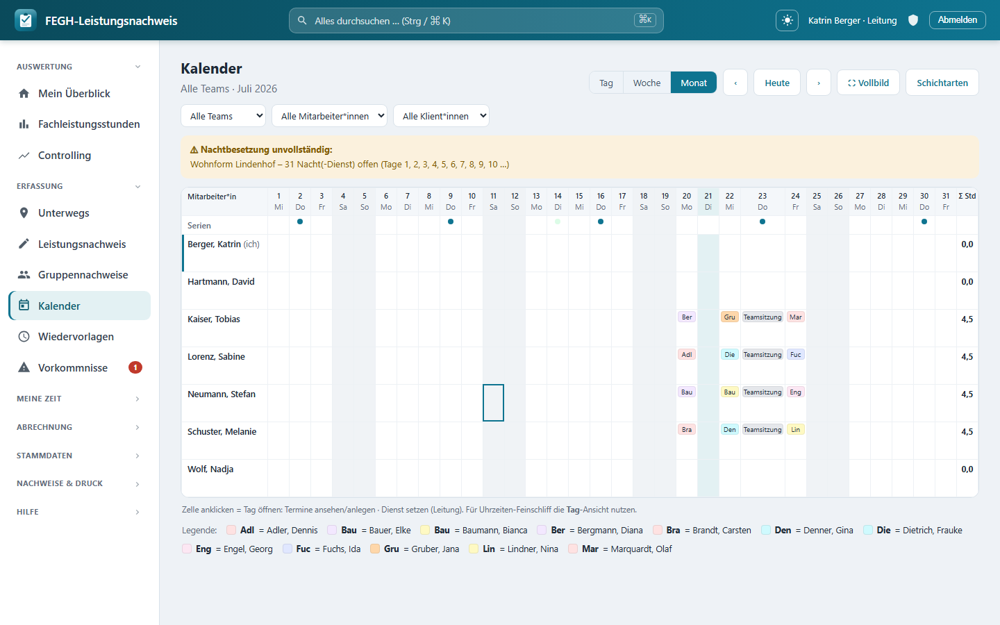
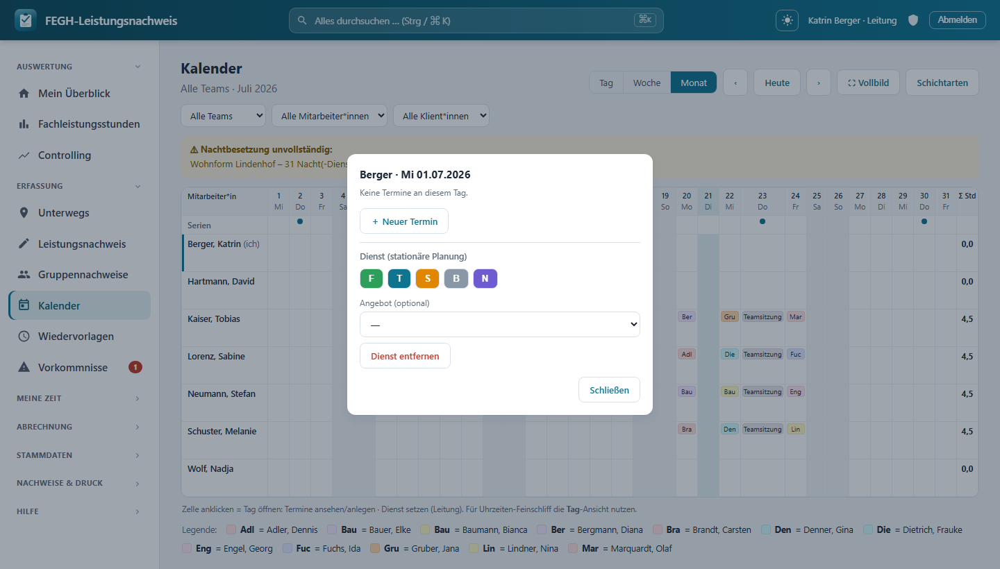

Kalender & Planungsbrett¶

Team-Kalender – Termine je Mitarbeiterin, Tag anklicken öffnet die Tages-Card zum Anlegen/Bearbeiten.*
Kalender und Dienstplan sind in dieser App ein einziges Werkzeug. Wer ambulant arbeitet, plant Klientinnen-Termine; wer stationär arbeitet, plant Schichtdienste – beides passiert auf demselben Planungsbrett, nur der Inhalt einer Tages-Zelle unterscheidet sich. Die Standardansicht ist der Monat: eine Matrix aus Mitarbeiterinnen (Zeilen) und Tagen (Spalten), in der Termine und Dienste nebeneinander stehen. Zusätzlich gibt es die Ansichten Tag und Woche für den Feinschliff. Die eigentliche Leistungserfassung (Fachleistungsstunden, Dokumentation) passiert weiterhin im Leistungsnachweis – das Planungsbrett dient der Übersicht und der vorausschauenden Planung.
Wer sieht das Planungsbrett?
Der Kalender ist an die Klientenarbeit gekoppelt und damit team-gescopt: Sichtbar sind nur Mitarbeiterinnen, Klientinnen und Dienste der eigenen (bzw. bei Leitung: der geleiteten) Teams. Admin und Verwaltung haben keinen Zugriff – der direkte Aufruf leitet zur Startseite zurück. Der frühere separate Dienstplan ist in dieses Brett aufgegangen; alte Lesezeichen leiten automatisch auf die Monatsmatrix um.
Die drei Ansichten¶
Oben rechts schaltest du über den Segment-Umschalter zwischen den Ansichten um. Die gewählte Ansicht bleibt beim Blättern und beim Filtern erhalten.
| Ansicht | Darstellung | Wofür |
|---|---|---|
| Tag | Stunden-Raster (6–22 Uhr), eine Spalte je Mitarbeiter*in, Termine als Blöcke | Uhrzeiten-Feinschliff, Termine ziehen/dehnen |
| Woche | Team-Matrix: Zeilen = Mitarbeiter*innen, Spalten = Mo–So | Wochenplanung |
| Monat | Matrix Mitarbeiterin × Tag mit Terminen und* Diensten, Stunden-Summe je Zeile | Standardansicht, Dienstplanung, Grobüberblick |
Neben dem Umschalter blätterst du mit ‹ / › eine Einheit zurück bzw. vor, Heute springt auf den aktuellen Zeitraum. Die aktuelle Ansicht steht als Untertitel, z. B. Juli 2026, KW 29 · 13.07.–19.07.2026 oder Mo, 14.07.2026.
Standardansicht
Ohne weitere Auswahl öffnet das Planungsbrett den aktuellen Monat. Deine eigene Zeile ist links mit einem farbigen Balken und dem Zusatz (ich) markiert.
Monatsmatrix (Standard)¶
Jede Zeile ist eine Mitarbeiter*in, jede Spalte ein Tag des Monats. In einer Zelle stehen – je nach Bereich – nebeneinander:
- Schichtdienste als farbiges Kürzel-Feld (z. B.
F,S,N), gefärbt nach Schichtart. - Klient*innen-Termine als farbige Chips (Klient*innen-Kürzel), bis zu zwei sichtbar; weitere werden als
+nangedeutet. - Genehmigte Abwesenheiten als schraffierte Zelle mit Kurzkürzel (z. B.
Urla), wenn an dem Tag weder Dienst noch Termin steht.
Ganz rechts steht je Zeile die Σ Std – die Summe aus geplanten Dienst-Stunden und Termin-Stunden (nur Termine mit Ende zählen) im Monat. Wochenenden und der heutige Tag sind farblich abgesetzt.
Wochenansicht¶
Team-Matrix über Mo–So. Jede Zelle zeigt die Termine des Tages als Chips. Termine bleiben beim Verschieben in ihrer Mitarbeiter*innen-Zeile.
Tagesansicht (Stunden-Raster)¶
Ein Zeitraster von 6 bis 22 Uhr mit einer Spalte je Mitarbeiterin. Termine erscheinen als Blöcke an ihrer Uhrzeit. Hier lässt sich die Uhrzeit am feinsten justieren (siehe Drag & Drop*).
Filter¶
Über der Fläche stehen bis zu drei Auswahlfelder. Sie greifen sofort und bleiben beim Ansichtswechsel und Blättern erhalten (UND-Verknüpfung).
| Filter | Wirkung |
|---|---|
| Team | Nur bei mehreren geleiteten Teams sichtbar; grenzt auf ein Team ein („Alle Teams" = Standard) |
| Mitarbeiter*in | Zeigt nur die Zeile einer Person |
| Klient*in | Zeigt nur Termine zu einer Klientin, ohne die Mitarbeiterinnen-Zeilen zu entfernen |
Die schwebende Tages-Card¶
Ein Klick auf eine Tages-Zelle (in jeder Ansicht) öffnet die schwebende Tages-Card. Sie ist die zentrale Bedienfläche und ersetzt die frühere rechte Formularspalte – das komplette Termin-Formular steckt jetzt in der Card selbst.

Tages-Card: Termine des Tages, „＋ Neuer Termin" und – für die Leitung – die Dienst-Schichtarten.
Die Card zeigt zuerst die Termine des Tages als Liste. Von hier aus:
- Bestehenden Termin anklicken → Formular öffnet sich vorausgefüllt im Bearbeiten-Modus (Button Speichern, dazu Termin löschen mit Sicherheitsabfrage).
- ＋ Neuer Termin → leeres Formular mit vorbelegtem Datum (und, aus der Tagesansicht heraus, vorbelegter Uhrzeit).
- ← Termine bringt dich vom Formular zurück zur Tagesliste; Schließen oder Esc schließt die Card.
Tastaturbedienung (barrierefrei)
Tages-Zellen sind mit Tab erreichbar und mit Enter/Leertaste zu öffnen. In der offenen Card bleibt der Fokus gefangen (Tab springt nur zwischen den Card-Elementen), Esc schließt sie, und der Fokus kehrt danach auf die auslösende Zelle zurück.
Wessen Termine du bearbeiten darfst
Du bearbeitest deine eigenen Termine. Als Leitung darfst du zusätzlich alle Termine der von dir geleiteten Teams bearbeiten und Termine für Teammitglieder anlegen bzw. umhängen. Termine, die du nicht bearbeiten darfst, siehst du zwar, kannst sie aber nicht anklicken/ändern – das wird serverseitig erzwungen.
Felder eines Termins¶
Ein Termin ist entweder einer Klient*in zugeordnet oder trägt einen internen Titel – eines von beidem ist Pflicht.
| Feld | Pflicht | Hinweis |
|---|---|---|
| Datum | ja | beim Öffnen vorbelegt |
| Beginn | ja | Uhrzeit |
| Ende | nein | Uhrzeit; nur mit Ende zählt der Termin in die Stunden-Summe |
| Klient*in | eins von beiden | Auswahl aus der eigenen Belegungsliste; „— interner Termin" lässt es frei |
| Titel | eins von beiden | für interne Termine, z. B. Teamsitzung, Supervision |
| Ort | nein | |
| Notiz | nein | Kurztext |
Datensparsamkeit (DSGVO Art. 9)
Das Planungsbrett arbeitet bewusst mit Kürzeln statt Klarnamen in der Fläche. Trage in Notiz/Titel keine sensiblen Gesundheits- oder Sozialdaten ein, die über die reine Planung hinausgehen.
Dienst setzen (nur Leitung, stationär)¶
Existieren Schichtarten, zeigt die Tages-Card zusätzlich die Sektion Dienst (stationäre Planung). Als Leitung:
- Schicht-Kürzel anklicken setzt den Dienst der ausgewählten Mitarbeiterin an diesem Tag. Pro Mitarbeiterin und Tag gilt genau ein Dienst – ein neuer ersetzt den vorhandenen.
- Optional wählst du ein Angebot (Standort/Wohngruppe), dem der Dienst zugeordnet wird.
- Dienst entfernen löscht den Dienst des Tages wieder.
SOLL, nicht IST
Der Dienstplan ist die geplante Besetzung (SOLL). Die tatsächlich geleistete Zeit (IST) bleibt die Arbeitszeit-Erfassung; den Abgleich beider zeigt die Leitung im SOLL/IST-Abgleich.
Drag & Drop¶
Termine lassen sich direkt in der Fläche verschieben – ohne das Formular zu öffnen:
- Monat / Woche: Einen Termin-Chip auf einen anderen Tag ziehen verschiebt das Datum. In der Woche bleibt der Termin in seiner Mitarbeiter*innen-Zeile.
- Tag: Einen Block ziehen ändert die Startzeit (15-Minuten-Raster), die untere Kante ziehen ändert die Dauer. Ein Doppelklick öffnet die Card zum Bearbeiten, ein Klick auf freie Fläche legt einen neuen Termin mit übernommener Uhrzeit an.
Schlägt ein Verschieben fehl (z. B. fehlende Berechtigung), wird die Seite neu geladen, damit die Anzeige wieder dem Serverstand entspricht.
Serientermine & Teamsitzung¶
Wiederkehrende Leistungen, die zur Anzeige im Kalender markiert sind, erscheinen als gestrichelte Serien-Chips (Monat: kleine Farbpunkte) in einer eigenen Serien-Zeile über den Mitarbeiterinnen. Die Teamsitzung* wird automatisch an ihrem festen Wochentag eingeblendet (aus den Jahresparametern, Feiertage ausgenommen). Serien sind Anzeige-Elemente und lassen sich hier nicht bearbeiten.
Nachtbesetzungs-Check¶
Nur Leitung, nur stationär
In der Monatsansicht prüft die App für Angebote mit Nacht-Erreichbarkeit, ob jeder Tag mit einem Nachtdienst besetzt ist. Fehlt an einem Tag der Nachtdienst, erscheint oben ein Warnbanner mit Angebot, Anzahl offener Nächte und den betroffenen Tagen. Der Check läuft nur, wenn Nacht-Angebote existieren, und ist nur für die Leitung sichtbar.
Vollbild¶
Der Button ⛶ Vollbild blendet Seitenleiste und Kopfzeile aus, sodass das Brett die ganze Fläche nutzt – ideal fürs Aushängen am großen Monitor oder in der Teamsitzung. Der Zustand bleibt über Ansichtswechsel hinweg erhalten.
Vollbild verlassen
Mit Esc (oder erneutem Klick auf den Button) kehrst du zur normalen Ansicht zurück.
Wochenplan drucken¶
Der interaktive Kalender hat keinen eigenen Druckknopf. Der Team-Wochenplan wird zentral über die Sammelseite Druck-Nachweise gedruckt.
- Das Druck-Layout rendert immer die Wochen-Matrix (A4 quer) – auch wenn die App standardmäßig den Monat zeigt; über
?kw=lässt sich die Woche wählen. - Aus Gründen der Datensparsamkeit erscheinen im Ausdruck nur die Kürzel der Klient*innen – keine Klarnamen.
Für Neugierige: Technik dahinter¶
Nur zur Nachvollziehbarkeit
Diese Abschnitte sind für die Bedienung nicht nötig.
- Views in
nachweis/views.py:_kalender_kontextbaut Zeitraum, Filter, Legende und je Ansicht die Datenstruktur – im Monat die vereinte Matrix ausTermin- undDienst-Objekten (matrix_zeilen/matrix_tage) samt Stunden-Summe (_stunden) und schraffiertenAbwesenheit-Zellen.kalenderrendert die Seite;termin_save/termin_deleteverarbeiten das Card-Formular (POST,@login_required),termin_move(Datum) undtermin_zeit(Beginn/Ende) bedienen Drag & Drop per Fetch. - Dienste in
nachweis/views_dienstplan.py:dienst_setzenlegt/ändert/löscht einenDienstje Mitarbeiter*in/Tag/Schichtart(nur Leitung);dienstplanist nur noch ein Redirect auf die Monatsmatrix;_nacht_lueckenliefert den Nachtbesetzungs-Check fürAngebote mitErreichbarkeitNACHT/TAG_NACHT. - Berechtigung:
services.ohne_klientenarbeit(request.user)sperrt Admin/Verwaltung;_termin_bearbeitbarerlaubt eigene Termine sowie – alsservices.ist_leitung– Termine der geleiteten Teams (Break-Glass); Fremdes wird mitHttpResponseForbiddenabgewiesen. Alles ist überservices.teams_fuer/services.klienten_fuerteam-gescopt. - Modelle (
nachweis/models.py):Termin(mitarbeiter, optionalklient,datum,beginn, optionalesende,titel,ort,notiz; Eigenschaftanzeige= Kürzel oder Titel,farbe= Klient*innen-Farbe oder Neutralgrau);Dienst(mitarbeiter×datum×schichtart, optionalangebot, Unique je MA/Tag/Schicht);Schichtart(kuerzel,beginn/endeauch über Mitternacht,farbe,ist_nachtdienst,dauer_stunden);Angebot(erreichbarkeit). - Template:
nachweis/templates/nachweis/kalender.html– Segment-Umschalter, Filter, die drei Ansichten (.mx-Monatsmatrix,.kal-Wochenmatrix,.daygrid-Stundenraster), die schwebende Tages-Card (#mxpopmit eingebettetem Termin- und Dienst-Formular), Legende, Drag-&-Drop- und Vollbild-JS (body.kal-fs, Esc-Handler).